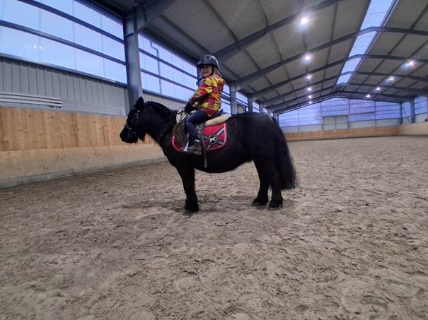
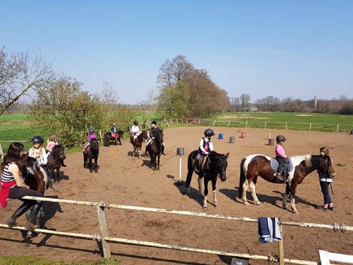
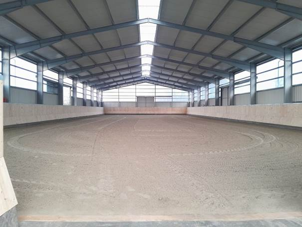
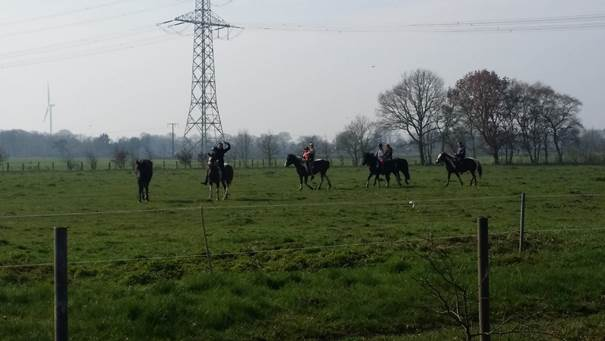

Über uns
Wir sind ein kleiner Reiterhof im Holsteiner Auenland. Die Reitstunden werden von unserer FN-Trainerin (C) Nicole Hausdorf geleitet.
Bei uns sitzen Ihre Kinder bei jeder Unterrichtseinheit etwa eine Stunde auf dem Pferd. Das Holen der Pferde von der Koppel ist ebenso Übungsziel wie das Pflegen, Putzen, Trockenführen und das Zurückbringen zur Koppel.
In der Abteilung lernt Ihr Kind die Grundgangarten sowie Dressur-Elemente und das Springen über Hindernisse.


Angebote
Reitunterricht
- Führzügel – Kinder & Jugendliche
- Fortgeschrittene Kinder & Jugendliche
Reitabzeichen
Als Leistungsnachweis und zur Vertiefung von Kenntnissen bieten wir regelmäßig FN-Reitabzeichenkurse an.
Pflegepferde
- Reiten und Pflege außerhalb des Unterrichts
- Ausritte auf den Pflegepferden
- Ausleihung des Equipments


Weitere Informationen
Weitere Infos finden Sie unter:
www.hausdorf-landwirtschaft.de